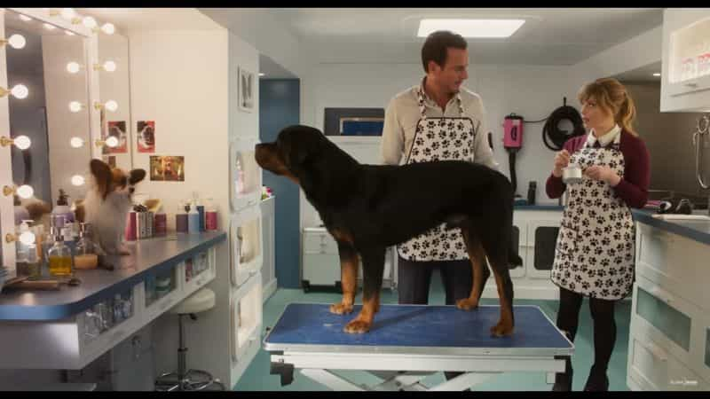
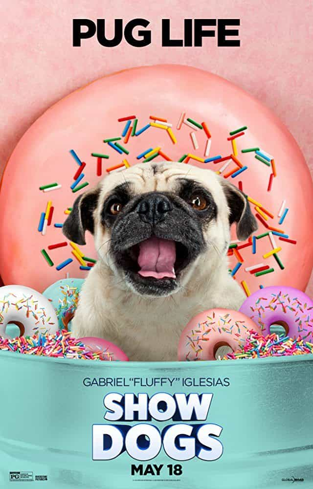

This account syndicates news from other media outlets.


We took the family to see the new movie, Show Dogs, last week at an advance screening. The premise is great for a kids movie. Max is a talking police dog (voiced by Ludacris) who is paired up with a human partner, Frank (Will Arnett) to infiltrate a prestigious dog show and rescue a kidnapped baby panda.
Being a tough dog from New York, Max has no business competing in a dog show but uses his street smarts to outperform the competition to get closer to the inner circle of kidnappers. Along the way, Max learns lessons about trust and the need to accept help from others. The usual hilarity ensues with dog farts, bites on the rear-end, and slap-stick bonks to the head which elicit giggles from the audience.
There are also the obligatory jokes that go over the kids head to entertain the parents with plenty of meta jokes that reference the actors work outside of this movie. The keen ear will pick up on the multiple cameos voice performances from the likes of Shaquille O’Neal, Gabriel Iglesias, and RuPaul.

What could have been solely a fun movie for kids that would get my highest recommendation is damaged by a dark and disturbing message hidden, not so subtly between the fluffy dogs and glamorous parties of the show dog lifestyle. As part of any dog show, contestants are judged on their abilities and physical attributes. One part, in particular, is the inspection of the dog’s private parts.
Being that Max is new to competing, he needs to learn the process so his partner, Frank, along with a former show champion work to get him ready for the final round of the competition. Since the inspection of the private parts will happen in the finals, Frank touches Max’s private parts to get him use to it. Of course, Max doesn’t like it and snaps at Frank for him to stop. Max is then told by the former champion, who has been through the process before, that he needs to go to his “zen place” while it happens so he can get through it. More attempts are made by Frank to touch Max’s private parts, but Max is still having trouble letting it happen and keeps snapping at him.
The day of the finals come and if Max doesn’t let his private parts be touched, he may lose the competition and any hope of finding the kidnapped panda. It all rests on his ability to let someone touch his private parts. The judge’s hands slowly reach behind Max and he goes to his “zen place”. He’s flying through the sky, dancing with his partner, there are fireworks and flowers-everything is great-all while someone is touching his private parts.
During the movie, I kept thinking, “This is wrong, it doesn’t need to be in a kids movie. Everything else in the movie is good fun except for this.” Afterward, my husband mentioned that he picked up on this message too, as did my mother who saw the movie with us.
My daughter, on the other hand, said her favorite part of the movie was when Max got his privates touched and the funny reaction he had. I decided to use that moment to help reinforce what we have taught our children since they were little, private parts are just that, private. We talked about how I didn’t feel that part needed to be in the movie. We talked about how we never let anyone touch our private parts, what they should do if anyone tries.
We reinforced that if anyone tries to touch their private parts or asks them to touch their private parts they should talk to us about that. We talked about different ways children can feel pressured to participate in those types of behaviors. A child predator is usually known to the child, rarely are they a stranger. We talked about bribes or threats, we discussed the fact that that type of behavior is not a game, we reminded them the same rules apply to kids as well as adults.

Approximately one-third of offenders are themselves juveniles, with 23% of reported cases of child sexual abuse are perpetrated by individuals under the age of 18 and only 14% of children who suffered sexual abuse were violated by an unknown perpetrator. (Victimsofcrime.org) Although you cannot prepare a child for every situation the more knowledge you give them the stronger their defenses are!
As a survivor of child abuse, this is something I feel strongly about and am passionate about helping others protect their children. I also fiercely strive to give my children the knowledge and tools they need to protect themselves. Those little humans are the greatest things in the world! Children are our greatest resource, if they have already been a victim of abuse this movie has the potential to be very triggering for them.
With the #MeToo movement and all the talk of sexual predators in Hollywood, I couldn’t help but think this message, that is blatantly in the open for adults to see, but over a child’s understanding, is meant to groom children to be open to having people touch their privates, even though they don’t want it. It gives them the idea of a “zen place” to go to mentally when they are touched. I’m a make lemonade out of lemons type of girl, so let’s take this movie and use it as a great teaching tool. I’m not going to encourage or discourage anyone from seeing this movie, I only want to help parents make an informed decision.
Don’t Miss: Does The Hollywood Elite Use Rituals And Sexual Blackmail To Keep Its Stars In Line?